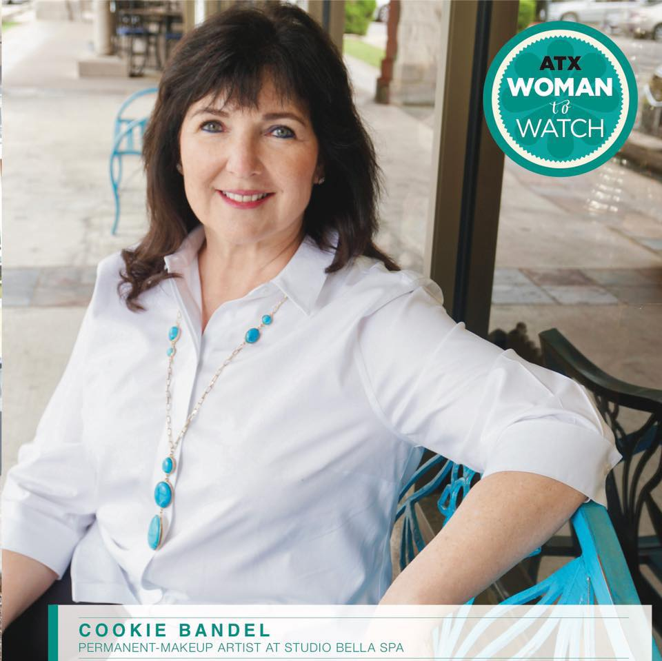

Cookie Bandel has been practicing Permanent Makeup since 2008 and is a well-established member of the Austin Tattoo Community. She is featured on KVUE Austin and in Austin Woman Magazine. From makeup repairs to aereola repigmentation, she is well known as one of the top professionals in Texas, with clients travelling from other cities and states to get her services.